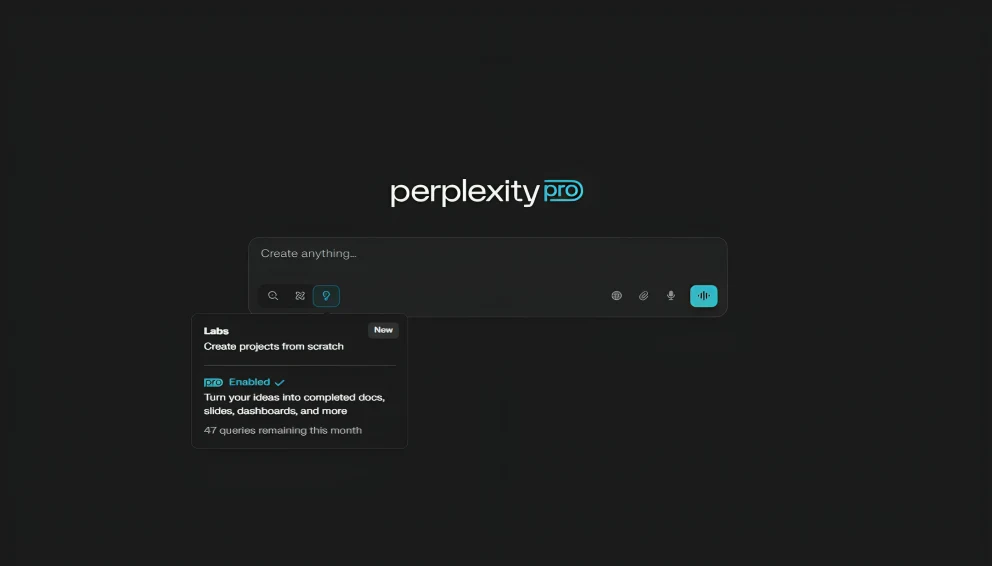
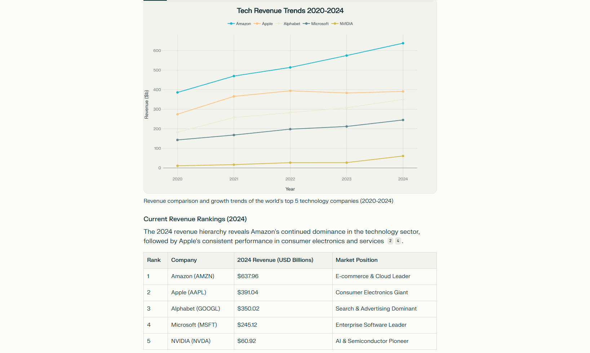
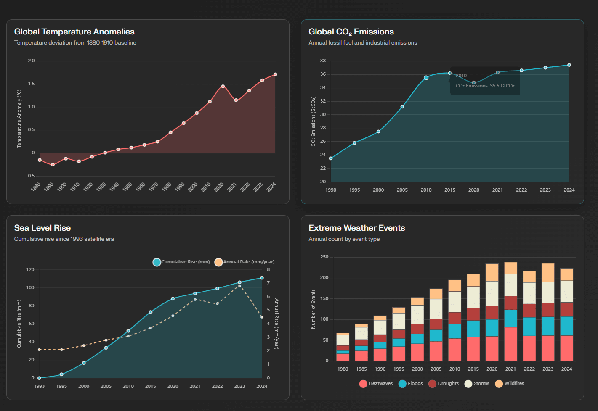
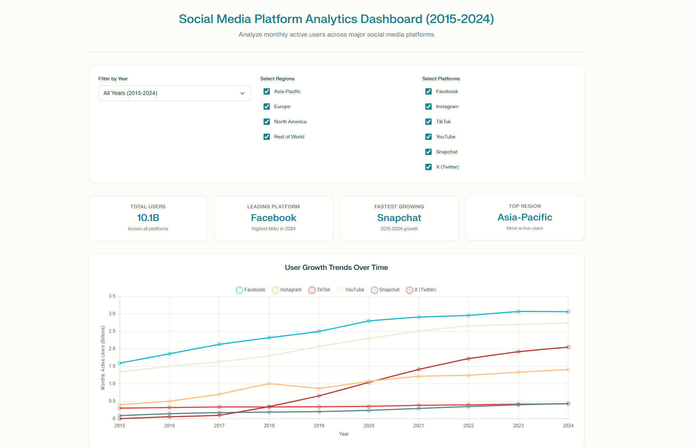
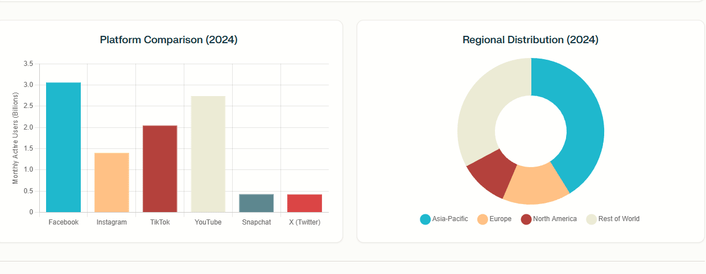
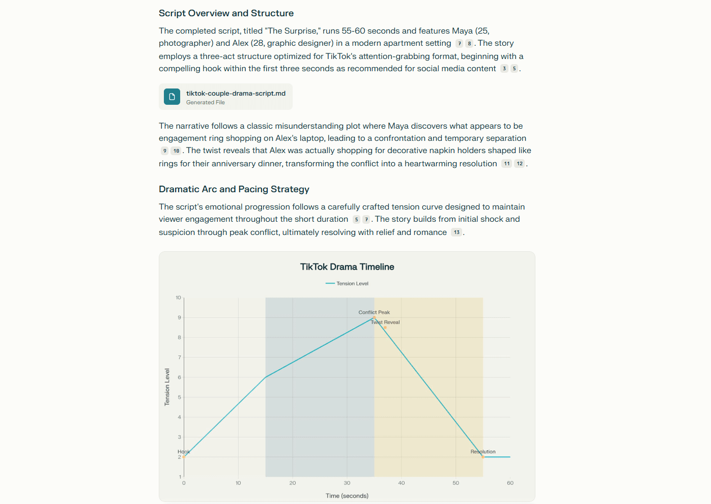
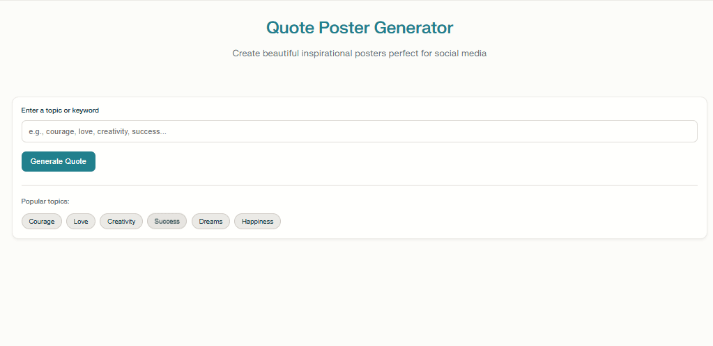
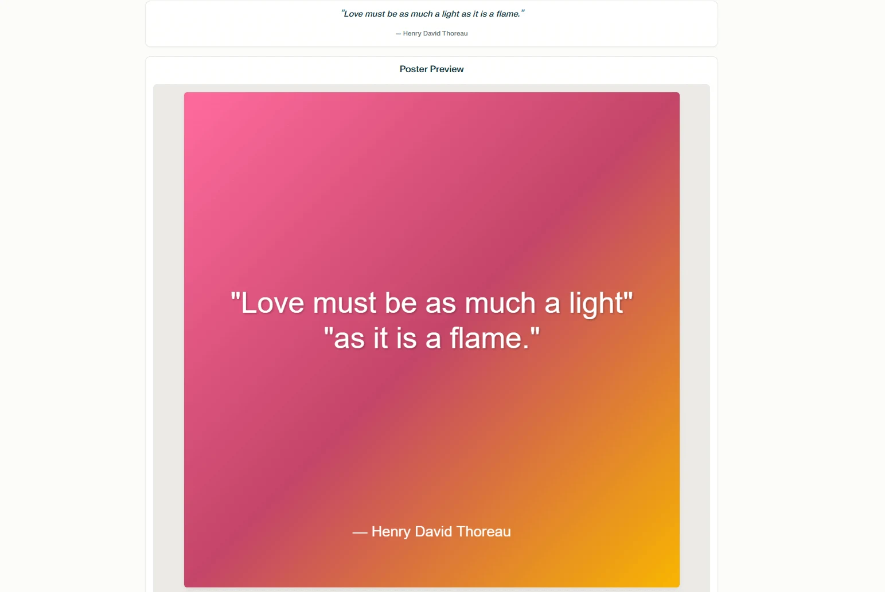

Perplexity Labs 指南：快速创建项目的新工具

设计一个应用程序、仪表板或电子表格通常需要一个小时、半天甚至更长时间。
但上周，我只用了5到10分钟就完成了类似的任务。这听起来不太可能，但这就是我使用Perplexity Labs的真实体验。这款由Perplexity AI开发的新工具旨在快速高效地处理复杂任务。
在过去的两周里，我在真实场景中对其进行了测试，并将分享它在效率、准确性和可用性方面的表现。
Perplexity Labs 是什么？
在深入探讨之前，让我们先简单了解一下 Perplexity Labs 是什么。
这是 Perplexity 为专业版用户推出的一款功能强大的全新创作工具，应用场景广泛。无论是撰写报告、创建电子表格、生成数据图表，甚至构建基本的 Web 应用，都可以在十分钟内完成，效率远超传统方法。
它最大的优势在于打破了工具之间的壁垒。过去，市场调研或战略分析等任务往往需要在搜索引擎、数据工具和文档编辑器之间不断切换。现在，所有这些步骤都可以在一个工作区内无缝完成。
这种高度集成使其在跨职能任务中尤为高效。正如 Perplexity 所说："使用实验室就像拥有一个团队。"
该功能现已正式集成到 Perplexity Pro 计划中，每月费用为 20 美元。如果你想以更低的价格体验，可以通过 GoSplit 购买更实惠的Perplexity Pro 账户，轻松解锁 Perplexity Labs。
Perplexity Labs 可以做什么？
在对Perplexity Labs的功能有了基本的了解之后，很多人更加关心的是：在实际情况下，它到底能给我带来什么帮助？
根据我自己和同事的经验，我们发现以下用例特别实用且最能代表其优势。
电子表格
你只需要告诉 Perplexity Labs 你想要的电子表格主题，它就会自动处理研究、构建结构和填充内容的任务。
例如，如果你想创建"全球五大科技公司过去五年营收对比表"，输入指令后，它可以快速生成包含营收数据、增长趋势和标准格式的Excel文件，你还可以请求添加交互功能。
这种自动化可以应用于各种工作场景。
财务人员可以用它来生成月度报表或预算对比，省去繁琐的数据整理工作。项目经理可以快速构建资源分配表或风险跟踪表，使项目信息更加条理清晰。
计算机代码
我知道AI工具写代码很常见，但大多数情况下，它们只是协助我们修改、优化或加快开发速度。
Perplexity Labs 更进一步：它可以根据你的需求从头生成完整的程序。你只需明确说明程序的功能即可。它会自动选择合适的语言、编写代码，并根据你的反馈不断调整。
此功能对于需要脚本编写的任务尤其有用，例如批处理文件处理、自动化或工具构建。即使你完全没有编程经验，仍然可以使用它快速生成脚本并解决实际工作问题。
可视化数据仪表板
说实话，制作兼具视觉吸引力和实用性的数据可视化并非易事。数据处理、图表选择、颜色搭配、版式设计——每一个步骤都会影响最终的效果。
Perplexity Labs 在这方面表现令人印象深刻，它可以生成各种常见图表，例如折线图、条形图和信息图，并自动将它们组织成结构良好的仪表板或报告页面。
它还支持添加下拉菜单和过滤器等交互式组件，使数据显示更加灵活，更易于探索。
在实际工作场景中，Perplexity Labs 的可视化功能可以以多种方式应用，例如：
数据分析报告： 将复杂的分析结果转化为清晰、直观的图表，使报告更具说服力，更易于理解。跟踪业务指标： 自动生成可视化仪表板以跟上关键数据变化，节省时间并提高效率。组织用户研究结果： 将用户反馈和行为数据转换为视觉输出，以帮助识别潜在趋势。创建内部报告或演示文稿： 快速生成专业、交互式图表页面，不仅节省时间，而且提高整体质量。
报告
我第一次尝试这个功能时，以为它只是像 ChatGPT 或 Gemini 那样的深度搜索工具，主要用于收集信息和解答问题。但实际体验却截然不同——Perplexity Labs 不仅仅是生成文本；它还能生成结构良好、视觉丰富的专业报告。
例如，如果你给它一个像"生成式人工智能模型当前趋势简析"这样的主题，它会自动创建大纲，逐段编写内容，插入图表，包含源链接，甚至添加相关图片。
此功能对于撰写结构化报告（例如投资分析、可行性研究或人力资源摘要）尤其有用。它有助于将零散的信息整理成清晰的叙述，自动生成视觉效果和摘要，并使报告更具吸引力且更易于理解。无需从头开始，你会发现大部分耗时的准备工作已经完成。
虽然最终报告可能仍需要一些手动编辑和细节润色，但它已经大大提高了效率。
迷你 Web 应用
在日常工作中，我们经常需要快速构建一些小工具，比如一个简单的数据查看器、一个调查问卷页面，又或者是一个轻量级的交互式演示应用。过去，这些需求通常需要开发人员的帮助，使得流程复杂且效率低下。
Perplexity Labs 提供了一个更高效的解决方案：你可以直接在其项目环境中创建并运行 Web 应用，无需安装其他软件或编写任何代码。只要你清晰地描述指令，例如"创建团队任务注册表"或"构建自定义活动日历"，它就能为你生成一个简洁易用的迷你应用。
虽然这些应用的功能相对基础，但它们对于会议、演示或收集反馈等用途已经非常实用。最重要的是，它为非技术用户提供了更多将想法变为现实的方法。
Perplexity Labs 提示词和效果
Perplexity Labs 能够处理各种内容生成任务，但它究竟是如何工作的？用户体验是否流畅？结果是否实用？这些问题只有通过实际使用才能找到答案。
为了探索这一点，我测试了几项常见的工作任务，并选择了三个代表性案例来展示它在不同场景中的表现。
创建可视化数据仪表板
作为日常工作中最常见的任务之一，我首先想测试一下Perplexity Labs在数据可视化方面的能力。我尝试的第一个项目是"全球主要社交媒体平台用户数对比"。
这是我使用的提示：
请生成一个可视化仪表板，比较全球主要社交媒体平台的用户量，涵盖 2015 年至 2024 年的月活跃用户 (MAU) 数据。
涵盖TikTok、Instagram、Facebook、YouTube、Snapchat和X等平台，支持按年份和地区筛选，并以图表形式展示用户增长趋势。请使用可靠的数据来源，例如Statista、DataReportal或We Are Social。
我们来看看结果：
从最终输出的效果来看，这个仪表板的整体完成度还是比较高的。
在结构上，它整合了时间、地域、平台三个维度的筛选条件，使用起来非常灵活，我可以轻松切换不同的条件，查看不同平台按时间和地点的用户数据表现。
接下来的两部分主要关注2024年的数据结果，信息结构比较清晰，环形图直观地呈现了区域分布情况。
但略显遗憾的是，这部分功能缺乏交互性，无法切换年份查看其他时间点的数据，从而无法支持更全面的历史数据分析和区域趋势对比。
创建故事脚本
与之前更注重数据处理的任务相比，这次我想看看 Perplexity Labs 在内容创作方面的表现，尤其是在特定的脚本风格提示下。我想知道它能否创作出一个情节清晰、曲折离奇的短篇故事。
这是我使用的提示：
为情侣制作一部时长不超过 60 秒的 TikTok 短剧剧本。
- 主题："误解与惊喜"，结局出人意料。
- 背景：现代日常场景（家庭、咖啡馆、街道等）。
- 语气：轻松而感性。
- 情节：以误会（例如嫉妒或怀疑）开始，以甜蜜或有趣的惊喜结束。
包含场景指示、自然对话（适合20-35岁）以及基本的镜头提示。格式为带标签的脚本。
让我们看看结果：
我收到的剧本很短，结构完整，格式清晰。剧本甚至还贴心地标注了每个场景的时间戳，方便直接用于拍摄。然而，故事情节本身比较老套，缺乏原创性，并不是那种真正能引起共鸣的短片。
如果你希望它能创造出更引人入胜、更具沉浸感的故事情节，我建议你提前写好详细的故事大纲和人物简介。使用 Perplexity Labs 作为执行工具，帮你完善结构和细节，而不是完全依赖它来构思一个完整的故事。
创建 Web 应用程序
这是我最期待的部分。作为一个没有任何编程知识的作家，我真的很好奇：我能否仅使用 Perplexity Labs 自己构建一个可用的小程序？
最终，我选择了一个既实用又有趣的项目——一个简单的名言生成器。我的想法是，它可以根据给定的关键词生成励志名言，并自动将其格式化为适合在 Instagram 上发布的图片。
迅速的：
- 创建一个简单的引言海报生成器，具有以下功能：
- 输入：主题或关键词（例如"勇气"、"爱"、"创造力"）
- 输出：与主题相关的一句励志名言
- 海报格式：方形（1080×1080px），适合社交媒体
- 背景：根据引言情绪渐变或主题图像
- 引文下方注明作者姓名（真实姓名或"未知"）
- 导出格式：PNG（或可下载的图像文件）
Perplexity Labs 没有让人失望：
整体布局感觉有些模板化，但它成功实现了我最初设想的功能。输入字段、生成按钮和关键字标签都清晰显示，我提供的示例关键字也自动添加到了"热门主题"部分。在可用性和完整性方面，它表现相当不错。
至于输出结果，虽然样式简单，但配色方案和布局看起来还不错。最让我惊喜的是重复率很低——即使多次输入相同的关键词，生成的引文也各不相同。背景图片还会根据关键词自动更改样式，这基本上满足了我对这个小工具的所有期望。
当然，以上三个示例只是我使用 Perplexity Labs 创建的一小部分。还有更多强大的功能等待你去探索。
根据我的经验，结果的质量取决于你如何设计提示并明确你的需求。在实际使用之前，你可能需要让 ChatGPT 帮助你完善和扩展你的提示——这样做通常会在你将其输入到实验室时带来超出预期的结果。
使用 Perplexity Labs 有哪些优势？
虽然已经提到了很多优点，但如果我必须总结一下 Perplexity Labs 真正脱颖而出的主要原因，我认为以下三个方面最让我信服：
提高工作效率
Perplexity Labs 不仅加快了单个步骤，还缩短了整个任务过程。
过去需要花费大量时间进行研究、数据分析、撰写报告、制作图表甚至构建网页的任务现在都可以在一个平台上完成。
只要你明确定义主题和目标，Perplexity Labs 就可以自动处理其余工作，包括搜索、分析和生成结果。
在大多数情况下，你可以在大约十分钟内获得完整的报告或网络应用程序，这比可能需要数小时甚至数天的传统流程快几倍。
更可靠的结果
我们都知道 Perplexity 以提供来源而闻名，但 Perplexity Labs 更进一步，提高了其结果的可追溯性。
在其生成的报告或分析中，几乎每个段落和数据点都有清晰的引用，并提供了所有链接。
它还会过滤掉低质量的网站，并优先考虑官方来源、主要数据库和其他可信参考资料。
因此你可以放心使用 Perplexity Labs——它生成的内容既可验证，又足够专业，可以直接用于实际工作。
降低职业门槛
虽然大多数人工智能工具旨在帮助程序员更快地工作并成长为更好的工程师，但 Perplexity Labs 却有所不同——它允许不懂编码的人编写程序。
无需编程经验或开发环境。只需描述你的想法，它即可生成可运行的脚本或小程序，例如用于批处理文件或数据组织。
这大大降低了编程的入门门槛，并向更多日常用户开放了以前依赖技能的任务。
结论
总的来说，Perplexity Labs 在实际使用过程中给我带来了不少惊喜。它确实帮我节省了重复繁琐任务的时间，甚至将一些原本只是想想而已的想法变成了真正可用的工具或 Web 应用。
就我个人而言，我已经将它作为首选的 AI 助手融入到我的日常工作流程中。
如果你也有兴趣尝试一下，但觉得每月 20 美元的订阅费有点贵，你可以按照我的做法，通过 GoSplit 购买 Perplexity Pro 帐户。
价格大幅降低，功能和性能却丝毫不减——体验同样流畅。无论你是好奇探索，还是计划长期使用，这都是非常划算的选择！